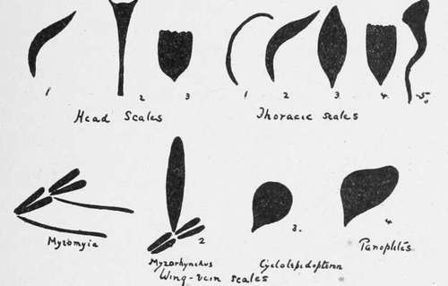

Anatomy Of The Mosquito. Part 9
Description
This section is from the book "Malaria, Influenza And Dengue", by Julius Mennaberg and O. Leichtenstern. Also available from Amazon: Malaria, influenza and dengue.
Anatomy Of The Mosquito. Part 9
The legs are respectively prothoracic, mesothoracic, and meta thoracic in origin. They are six in number, and each consists of coxa, trochanter, femur, tibia, and a tarsus consisting of five segments; the first tarsal segment is often termed the metatarsus. The terminal segment of the tarsus bears one or more claws, which may have one or more teeth; the characters of the male ungues are occasionally of help in differentiating mosquitos otherwise similar in appearance. There may be pulvilli, and an empodium between the claws in some forms. The coxa is about twice the length of the trochanter. The length of the metatarsus or first tarsal segment is of specific value in regard to its proportionate length to the tibia in the hind legs of some species.
The abdomen consists of eight segments; each segment consists of a dorsal chitinous plate, the tergum, united by the pleural membrane to the ventral plate or sternum. The pleural membrane is pierced by the openings of the abdominal spiracles, though, according to some observers, only six openings can be made out, while others describe eight. They are best seen in the newly hatched insect.
The Genitalia
On the posterior end of the last segment in the male is a pair of lobed appendages, each terminating in a well marked claw or clasper, the clasper of one side crossing that of the other. In the female there are no claspers, but from the last segment project two flap like processes which are probably used for oviposition. The character of the male genitalia is of some importance in classification.
The Wings
The main features of the wing that are of importance are the arrangement of the veins and the disposition and character of the scales. Though no two nomenclatures of a wing of a Dipteron seem to agree, we have adopted one here which at least can readily be followed: (1) The costal vein runs along the anterior margin or costa of the wing. (2) The subcostal (or auxiliary or mediastinal)' joins the costal at a variable distance from the apex of the wing. (3) The first longitudinal, running a practically straight course from the base of the wing to the apex. . (4) The second longitudinal commences about the middle of the wing, and after a little distance divides into branches or forks, the space included between the branches being termed a forked cell. This is the anterior forked cell (or first submarginal cell). The branches of the second longitudinal vein may be termed anterior and posterior respectively. (5) The third longitudinal vein, arising from near the middle of the wing but nearer the apex than the second, runs straight to the margin. (6) The fourth longitudinal vein commences at the base of the wing and is also branched near the extremity, forming the first posterior forked cell. (7) The fifth longitudinal vein arises also from the base, and, running a sloping course, gives off a large anterior branch inclosing the second posterior forked cell. (8) The sixth longitudinal vein runs a sinuous course and is not branched. In the Heptaphlebomyina there is a seventh longitudinal vein. Besides these longitudinal veins there are several cross veins, three of which are situated at the base, joining the costal and subcostal; first and third longitudinal, third and fifth longitudinal respectively. There is also a cross vein joining the second longitudinal at its margin with the first longitudinal in front. Neither of these veins is of as much importance as the three following, which vary in position in different species and are of some use in classification, but, owing to their variability in the same species, they must be used with great caution. They are situated about the middle of the wing field, and are known respectively as-(1) The anterior or supernumerary cross vein; it connects the third at its origin with the second in front; (2) the midcross vein, joining the third at its origin with the fourth posteriorly; and (3) the posterior cross vein, joining the branch of the fifth cross vein with the fourth in front. With regard to the fork cells, we may give as examples of the variations found in them: (1) In the Anophelince the anterior forked cell is as long or longer than the first posterior forked cell; (2) in the Megarhinince it is very small and much smaller than the first posterior forked cell; (3) in the Culicince it is as long or longer than the posterior forked cell; (4) in the Aedeomyince the forked cells are very small and the anterior is smaller than the posterior. Again, the position of the cross veins varies in different genera; thus in Hcemagogus the posterior cross vein is nearer the base than the mid, whereas in Sabethes it is nearer the apex, but these differences are of minor importance compared with scale structure.
In the classification of the Culicidce the structure of the scales of the different parts of the body, especially those of the head, thorax, and wings, is of the greatest importance, and a knowledge of these, which is readily obtained, will greatly simplify the identification of a particular mosquito, or at least assigning it to its proper genus. The determination of the species can be done only by reference to a systematic treatise, e. g., Theobald's "Monograph of the Culicidce of the World."
Fig. 6.-Varieties of Scales (after Theobald) (from Stephens and Christophers' "Practical Study of Malaria").
A. Head Scales
These are of three types: (1) Narrow curved scales; (2) upright forked scales, situated usually posteriorly; and (3) flat scales, closely applied to the head like the tiles on a roof. These three varieties can readily be recognized.
Continue to:
Tags
mosquito, malaria, influenza, dengue, symptoms, outbreaks, diseases, hemoglobinuria, infections